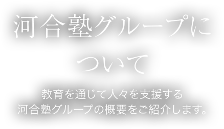
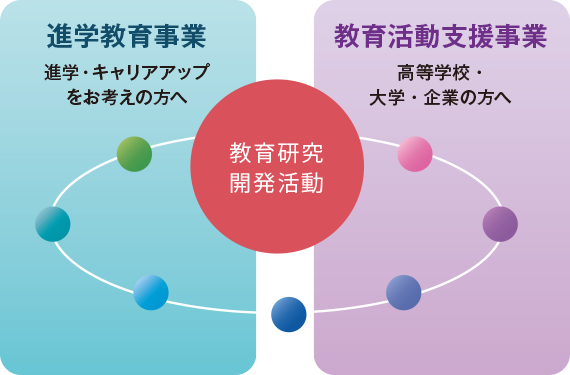
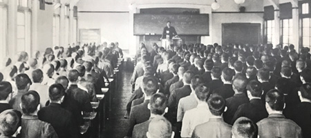
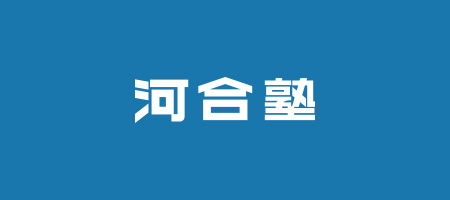

 
私たちは「教育研究開発活動」「進学教育事業｣「教育活動支援事業」の3つの活動·事業を柱に、新たな教育価値を社会に提供し続けてきました。
学校法人河合塾をはじめとする3つの学校法人、持株会社である株式会社KJホールディングスを親会社とする事業会社11社と機能会社2社、2つの財団法人によりグループを構成。幼児から社会人まで10万人以上もの生徒が、全国400カ所以上の校舎·教室で学び、全国最大規模を誇る「全統模試」の年間のべ受験者数は298万人に及びます。
こうした多面的かつ大規模な事業展開の一方で、私たちが大切にしているのが「すべては一人ひとりの生徒のために」という想い。これからも“本音の教育”を志す民間の教育機関として、自らが信じる教育を追求していきます。
数字で見る河合塾グループの今
生徒数
106,100人
2016年3月31日現在
校舎・教室数
413校
2017年1月1日現在
教員数
1,988人
2016年4月30日現在
職員・社員数
2,185人
2016年3月31日現在
- ※数値はすべてグループ全体の合計です。
-
高卒生全国シェア
(グループ全体) - 32%
-

「全統模試」
年間延べ受験者数 -
298万人
全国最大規模
河合塾グループの事業構成
- 
-
私たちがめざす教育イノベーション、それは社会に新たな教育価値を提供すること、そして未来を切り拓く次世代人材を育成すること。その柱となるのが、「教育研究開発活動」「進学教育事業｣「教育活動支援事業」の3つの活動·事業です。
事業紹介トップ
-

ごあいさつ
河合塾グループ代表法人 学校法人河合塾理事長からのあいさつです。
-
塾訓・使命
河合塾グループ創立以来の「塾訓」や河合塾グループの社会での存在意義を示した「使命」、創立者の言葉などをご覧いただけます。
-

沿革
河合塾グループの沿革をご覧いただけます。
-

グループ内法人一覧
河合塾グループの法人情報をご覧いただけます。